|
TURRIS LIBISONIS
Turris Libisonis la actual Porto Torres.
Fenicios, cartagineses, y los romanos, que en el siglo I a.e.c. fundaron
la colonia de Turris Libisonis, cuyo nombre deriva de la presencia de
una de las torres (turris) de la época nurágica, llamada Libiso (Libisonis),
refiriéndose así a Libia, la tierra original de los fenicios.
Se cree que la colonia fue fundada por Julio Cesar
o Augusto en el 46-41 a.e.c. Plinio el Viejo escribió que Turris
Libisonis era la única colonia romana en Cerdeña ("autem una quae
vocatur ad Turrem Libisonis").
De época romana destacamos el parque arqueológico,
el puente romano, el acueducto y los restos del antiguo puerto.
En el yacimiento arqueológico podemos visitar los restos de una muralla
de la época de Augusto, de la que quedan algunos restos en la zona
occidental. Son visibles algunas de las calzadas y calles de la colonia,
los restos de las termas, tabernae, el criptopórtico y la domus de
Orfeo.
También visitamos el Antiquarium Turritanum, un museo que
alberga los muchos artefactos encontrados en las excavaciones.
El Puente romano sobre el río Mannu,
con sus sietes arcos y construido con piedra caliza y traquita. Data de
época imperial. Reconstruido a lo largo de los años, era accesible para
vehículos hasta la década de 1980. Con los trabajos de restauración
restauración, se descubrió su pavimento original, hecho de grandes
piedras de traquita sin pulir. Aún son visibles dos bajorrelieves
vinculados al dios Dioniso, protector del puente, y las huellas dejadas
por los romanos, bizantinos, ...
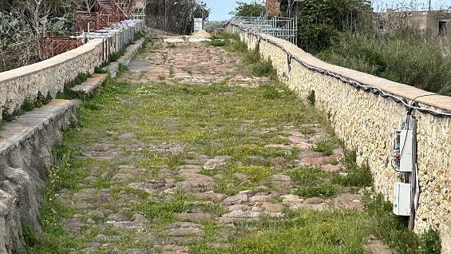
En nuestra visita a través del Cardo
entramos al Yacimiento. Esta calle enlosada estaba
flanqueada al oeste por un pórtico sostenido por columnas, que daba a
las tabernae.
Las columnas no están colocadas en su posición original. Del mismo modo,
las losas de traquita de la calle, parecen haber sido reconstruidas en
un orden irregular en la reconstrucción de la década de 1960.
|
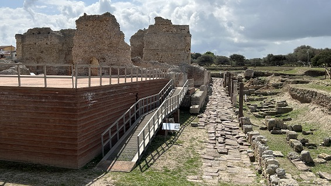 |
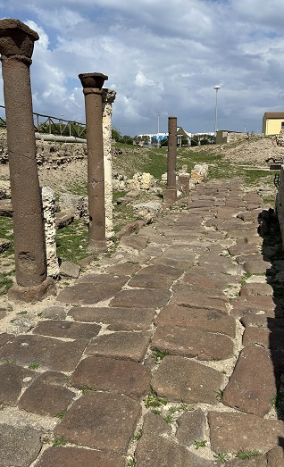 |
En el lado sur, el cardo se cruza perpendicularmente con el
Decumanus, otra vía empedrada que corría de este a oeste.
Entre el complejo de las termas y la sección sur del decumanus vemos el
Criptopórtico, una galería cubierta cuya función todavía
se discute hoy en día. Probablemente perteneció a unas termas
anteriores, siglos I-II, donde era un lugar para paseos, reuniones o
gimnasia.
|
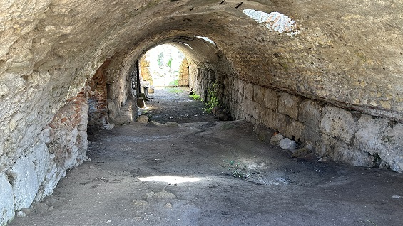 |
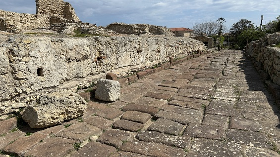 |
Cuando se construyeron las Termas Centrales,
el criptopórtico existente se reutilizó como base para soportar el lado
norte del edificio.
Las termas centrales datan del siglo III-IV y ocupaban una manzana
entera de 2000 metros cuadrados. La zona llamada el "Palacio del Rey
Bárbaro", el mítico gobernador de Cerdeña que, en el siglo IV, martirizó
a los santos Gavino, Proto y Gianuario, que todavía hoy son venerados en
Porto Torres.
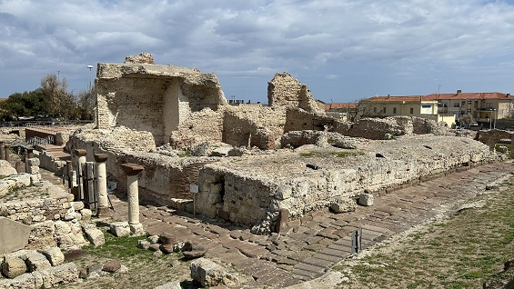
El acceso a las termas se realizaba a través de una arcada rectangular
con el suelo decorado con mosaicos, partes de los cuales se exhiben
actualmente en el interior del Antiquarium.
La primera gran sala era el frigidarium, con dos piscinas opuestas a las
que se accedía a través de escalones, con suelos decorados con mosaicos
y paredes de mármol, que hoy solo se conservan parcialmente porque ya
habían sido saqueadas en la antigüedad.
Desde allí se entraba en el tepidarium. Esta es la única sala donde aún
se conserva parte de la bóveda.
Más adelante, estaban las tres caldarias. Actualmente, el tepidarium y
la caldarium no se pueden visitar por razones de seguridad y porque aún
no se han excavado en su totalidad.
Se calentaban a través del hipocausto; se dejaba un espacio vacío debajo
del piso y detrás de las paredes. El suelo se elevaba sobre una serie de
pequeños pilares llamados suspensurae, mientras que las paredes se
construían con ladrillos huecos, o con ladrillos especiales con
protuberancias en la parte posterior (los llamados tegulae mammatae).
|
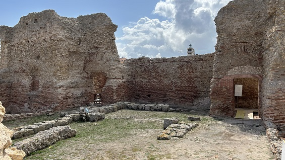 |
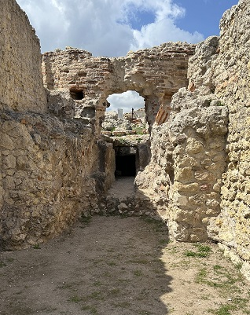 |
| |
|
|
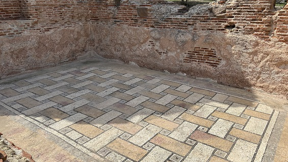 |
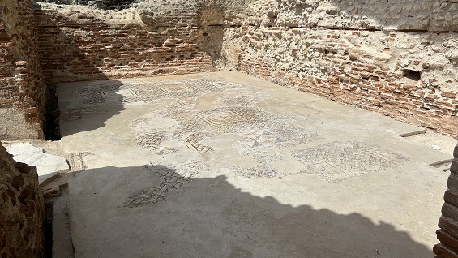 |
La Domus de Orfeo se localiza debajo
del pórtico de acceso a las termas centrales, recientes excavaciones
arqueológicas han revelado la presencia de esta domus que tenía
diferentes habitaciones, decoradas con frescos pintados y valiosos
mosaicos. No sabemos el motivo por el que se abandonó y se construyeron
la termas sobre ella.
El mosaico más importante representa a Orfeo tocando la lira, del que la
domus recibe su nombre. Todavía no es posible reconstruir la planta de
esta, que está domus de mediados del siglo III.
En la primera sala, hay un mosaico policromado, que representa las Tres
Gracias; diosas de la alegría de vivir, siempre están asociadas con el
culto a la Naturaleza.
Al otro lado del mosaico había una "bañera" de tres lóbulos, decorada en el
interior con un mosaico que representaba 18 tipos de pescado y marisco.
La bañera ha sido interpretada por los arqueólogos como una fuente,
probablemente colocada en un entorno al aire libre.
La segunda área, dividida en al menos tres habitaciones, está decorada
con tres mosaicos policromados, todos ellos basados en modelos de África
Proconsularis (el actual Túnez). Los dos mosaicos laterales tienen
patrones geométricos, mientras que el mosaico central vemos a Orfeo
tocando la lira rodeado de animales. Se le representa con el torso
desnudo y el típico gorro frigio, utilizado en las representaciones
antiguas para identificar a los personajes de origen oriental.
|
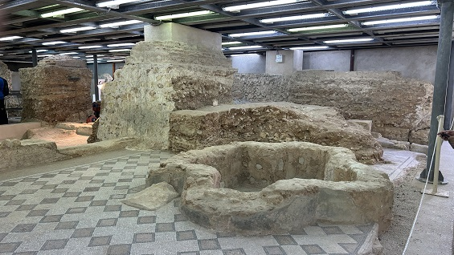 |
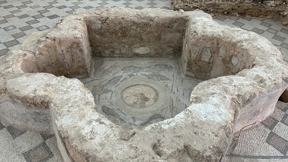 |
| |
|
| |
|
|
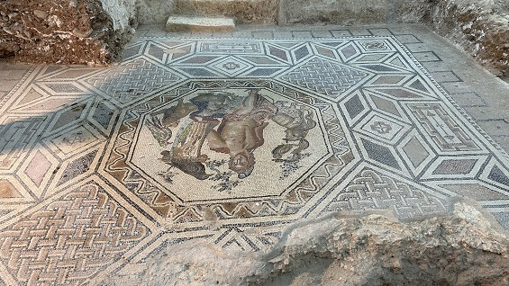 |
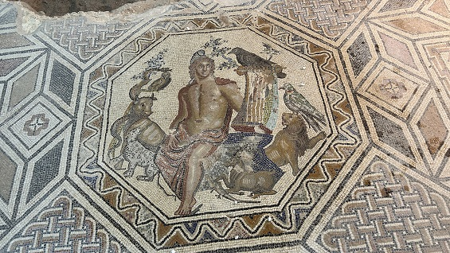 |
| |
|
| |
|
|
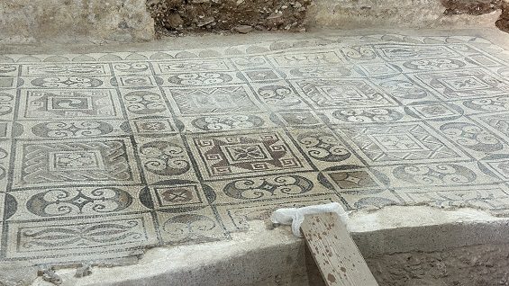 |
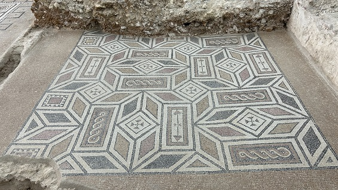 |
Orfeo hijo de la musa Calíope y del rey tracio Eagro, es el poeta y
músico más longevo de la historia. Recibió una lira como regalo de
Apolo, y fue educado por las Musas para convertirse en un intérprete
inigualable, capaz de cautivar a animales y plantas con su música.
Según la mitología, Orfeo participó en la expedición de los argonautas,
durante la cual, su canto salvó a la tripulación de las sirenas. También
se le recuerda como profeta, fundador de los Misterios Órficos, un
movimiento religioso que prometía la salvación a sus seguidores si
llevaban una vida ordenada y pura, basada en prácticas ascéticas y reglas
estrictas, como la prohibición de comer carne y huevos.
La trágica historia de amor con la ninfa Eurídice, que murió
prematuramente por una mordedura de serpiente. Orfeo, desconsolado, bajó
al reino de los muertos a buscarla. Con su canto, conmovió a Hades, dios
de los muertos, y a Perséfone, su esposa, y se le permitió llevarse a su
amada de vuelta a la tierra de los vivos, con la condición de que no se
volviera a mirarla antes de llegar a la Tierra. Orfeo se volvió para mirarla, y
Euridice desapareció.
Dado que en la antigüedad ningún tema decorativo era casual, los
arqueólogos creen que el propietario de esta domus eligió el mito de
Orfeo después de perder a su ser querido.
Las Termas de Pallotttino,
fueron excavadas en la década de 1930 por el arqueólogo Go Doro Levi,
Director de la Superintendencia de Cerdeña hasta 1938, cuando fue
destituido de su cargo por ser judío. Reemplazado por el arqueólogo
Massimo Pallottino, de quien proviene el nombre de las Termas.
Se conservan tres salas. El complejo termal está datado, entre
finales del siglo III y principios del IV.
Se conservan restos de las partes derrumbadas de los muros y bóvedas,
que al derrumbarse dañaron gravemente el suelo.
Los trabajos de excavación de los últimos años han sacado a la luz,
detrás del ábside, el calidarium.
|
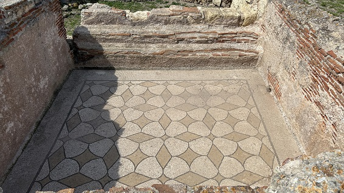 |
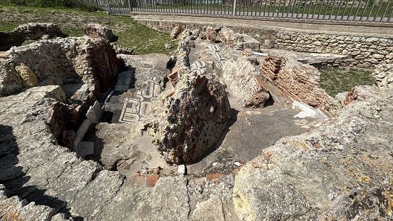 |
Alrededor de la ciudad antigua, fuera del
yacimiento arqueológico, hay algunas Necrópolis de varias
épocas.
|